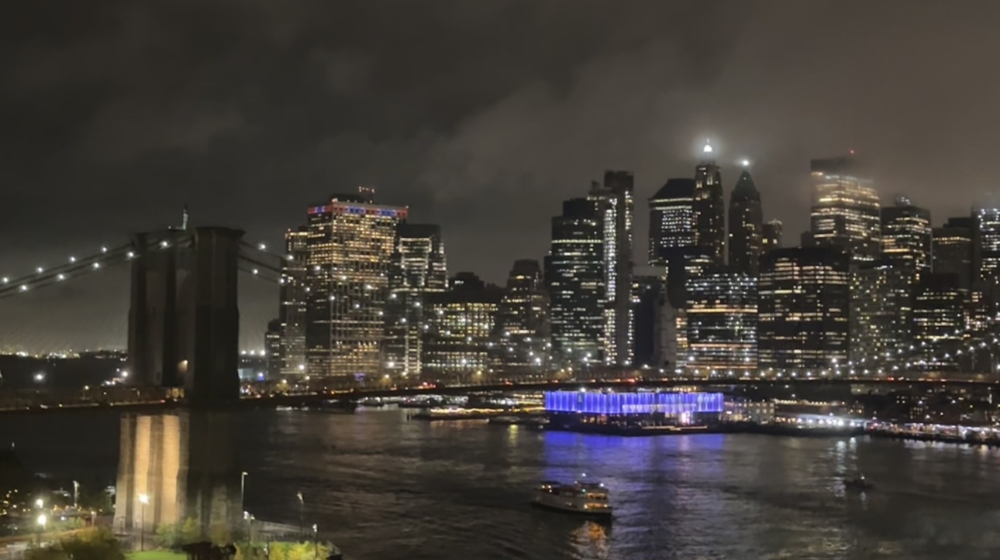
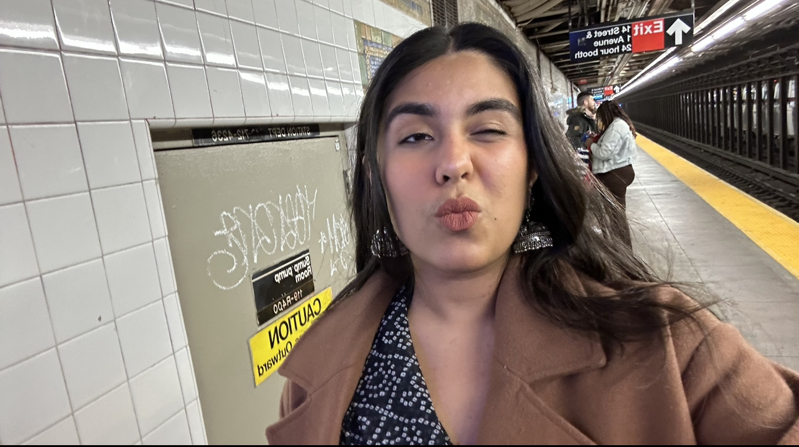

Reflection River

November 11th 2023 07:30pm
A Different P.O.V
11/11/2023
Don't worry, it's still the east river, just from higher up.How did I get up here you ask? It's funny, as I walk on the streets of New York, it's not hard to spot one of those top view buses. I told myself I'll get on one of those. $70 for that? No, thank you. Well, I changed my mind and no, I did not spend $70 dollars to get on that bus. My friend had a free ticket and even though I did not have a lot of free time, I wondered what would the city look like from up there. Don't get me wrong, it's no Vanderbilt, but the trees, the signals, scaffoling? A different point of view right?
A different point of view can change the way you see things, not just how they look but also how you feel. The east river is always breathtaking but sometimes when somethings become a routine, we start taking things for granted. As we drove over the bridge on that silly little bus, with some rather pesky commentary in the back, my eyes went to the pepsi cola sign and I realised I'm over the pier. I have to say, I forgot how beautiful it was, all the lights reflecting into the river, the soft waves, I felt silence, a good kind of silence. Made me realise, It's good to change things up, when you get too comfortable, it's starts turning into an uncomfortable loop.
It's also about looking at the bright side of things. Speaking in very broad terms, (intentionally) when we make mistakes, we lose something but we also gain a lot of experiences, find the right people, even find yourself. Sometimes, It may feel like the end of the world but it's not, just look at things from a different angle and that brings me here: I know the sun is setting at 5pm, I know it's cold outside, but that didn't stop me from having a fun, food-filled diwali weekend!
5 / 8

Saree on the Subway!
❮
❯
Songs of the Weekend: ख्याली पुलाव Edition
B's Song of the Weekend
D's Song of the Weekend
A's Song of the Weekend
7:31 AM
Seven Thirty- One
I wake up to the sun.
ready to run
ready to get some things done.
Not really, not until I play some,
not for my ears, but for my mind to come.
the tune takes a ride,
out of my bed I slide.
Hot water, then cold,
sit down, stand up
minty rush in my mouth,
picking the first thing that I found.
Then I come to my bed
realise everything I've said,
some folds and some blows,
we'll do this at seven again.
the light at the end of the tunnel.